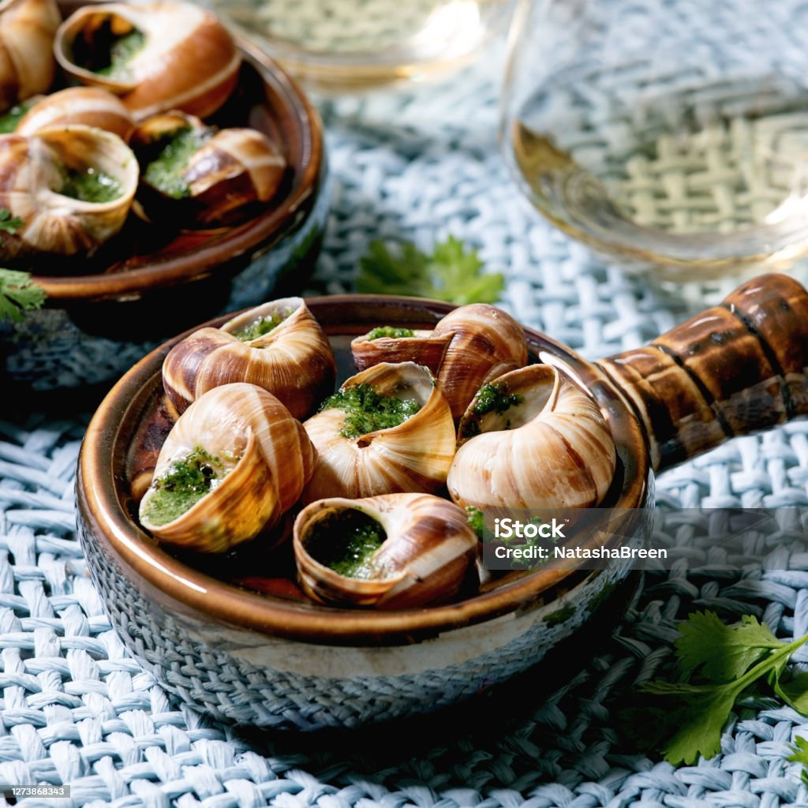

Burgundy snails in garlic-herb butter

Description
A quintessential French delicacy, "Escargots de Bourgogne" features tender snails baked in a rich, garlicky parsley butter.
Traditionally served in their shells with a special tong and fork, this dish is a celebration of simple, bold flavors and is often enjoyed as a starter with crusty bread and white wine.
Ingredients
- Fresh snails,24 (about 500g)
- Unsalted butter,250g, softened
- Garlic,4 cloves, minced
- Shallots,2, finely chopped
- Fresh parsley,1/2 cup, chopped
- Fresh chives,1 tbsp, chopped
- Lemon juice,1 tbsp
- Salt & pepper,To taste
- Dry white wine,2 tbsp (optional)
Steps
- Prepare the snails:
Clean and cook them in boiling water for 5 minutes, then drain.
- Make the garlic-herb butter:
In a bowl, mix the softened butter, minced garlic, shallots, parsley, chives, lemon juice, salt, and pepper.
If using, add the white wine for extra flavor.
- Stuff the shells:
Fill each snail shell with a snail, then top with a generous amount of the garlic-herb butter.
Place the stuffed shells in a snail dish or ovenproof tray.
- Bake:
Preheat the oven to 200°C (400°F).
Bake the snails for 10-12 minutes, or until the butter is bubbling and golden.
- Serve:
Serve immediately with crusty bread to soak up the delicious butter.
back to Odin recipes